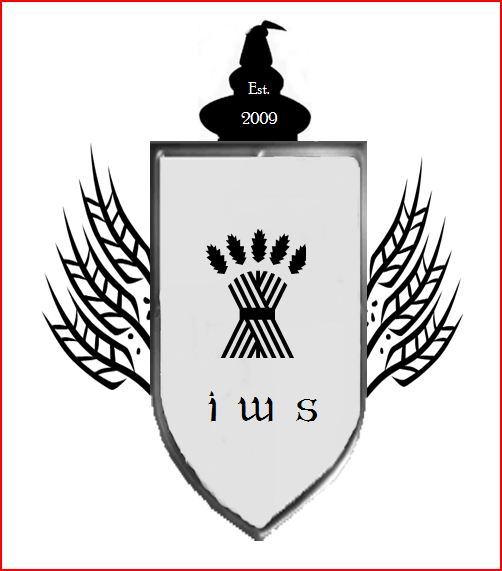
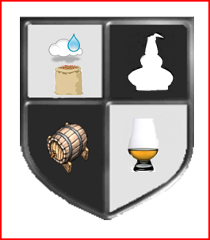
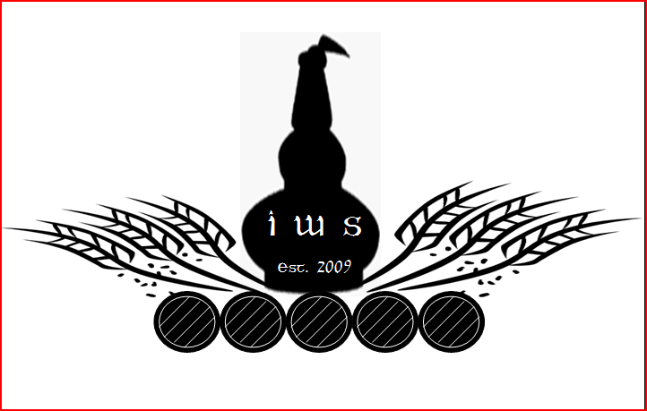
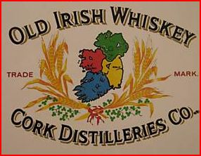

Page 5 of 7
Re: Society Logo

Posted:
Tue May 12, 2009 11:04 amby DavidH
I was wondering how a crest logo would look if reduced and engraved onto a glass. I don't know how realistic this is (I reduced and embossed the image). Perhaps an etching onto glass would be monochrome rather than embossed.

- iws6.png (9.8 KiB) Viewed 2599 times
Re: Society Logo
Posted:
Tue May 12, 2009 11:10 amby DavidH
varizoltan wrote:place a little irish flag on the top of the pipe

Without wishing to start a political argument, the Irish flag is not a symbol that embraces the entire island of Ireland. The pot still shape could work though.
Re: Society Logo
Posted:
Tue May 12, 2009 11:44 amby IrishWhiskeyChaser
DavidH wrote:varizoltan wrote:place a little irish flag on the top of the pipe
Without wishing to start a political argument, the Irish flag is not a symbol that embraces the entire island of Ireland. The pot still shape could work though.
Well actually it was supposed to originally ... Green for the Republic, Orange for the the protestant community and white for peace. But yes, it is not seen in any way like that these days.

Re: Society Logo
Posted:
Tue May 12, 2009 12:05 pmby DavidH
IrishWhiskeyChaser wrote:Well actually it was supposed to originally ... Green for the Republic, Orange for the the protestant community and white for peace. But yes, it is not seen in any way like that these days.
I bet they had the same sort of discussion when they were designing the flag that we are having: "Guys, rectangular flags are sooo last century... Green and orange? How am I supposed to design a nice-looking website with green and orange?!"
Re: Society Logo
Posted:
Tue May 12, 2009 12:10 pmby IrishWhiskeyChaser
DavidH wrote:I was wondering how a crest logo would look if reduced and engraved onto a glass. I don't know how realistic this is (I reduced and embossed the image). Perhaps an etching onto glass would be monochrome rather than embossed.
iws6.png
I actually think that particular design of mine is far too busy but that monochrome version is not bad. If some one could take the rough idea and do something more stylish with it.
Re: Society Logo
Posted:
Tue May 12, 2009 1:59 pmby IrishWhiskeyChaser
Another play on the crest idea but imagine empty for people to suggest ideas.
Is IWS okay or should we try it get Irish Whiskey Society in to the logo
More appropriate for a commando unit I think

- 
- IWSsheaf.PNG (74.88 KiB) Viewed 2589 times
Re: Society Logo
Posted:
Tue May 12, 2009 4:12 pmby DavidH
I think "IWS" is OK.
I had another look for the new Glenglassaugh crest online but couldn't find a clear image of it. They managed to design a classic-yet-modern crest that incorporated meaningful symbols but combined in a clever way. This type of thing is far beyond my graphical powers to attempt but if we go with a crest that's what I want.
One thing that isn't in the Glenglassaugh design is a shield. That shape reminds me of school uniforms. It's a bit stuffy and doesn't sell the society as modern and vibrant, IMHO.
Re: Society Logo
Posted:
Tue May 12, 2009 5:01 pmby IrishWhiskeyChaser
I'm actually not overly kean on the shield idea either unless it was very stylised and that is just probably getting to complicated a normal shield just reminds me of Golf Club or Rugby club blazers
I think the Glenglassaugh idea is beyond my capabilities too
Okay my last shield so ....

- 
- IWSsimplecrest.PNG (45.46 KiB) Viewed 2583 times
Re: Society Logo
Posted:
Tue May 12, 2009 5:49 pmby IrishWhiskeyChaser
Getting away from the whole shield and circle idea with no boundaries
Our new mascot maybe


- IWS Peacock
- IWSPeacock.PNG (74.07 KiB) Viewed 2582 times
Or slightly more open with a few barrels
- 
- Barrelling Along
- IWSstillbarrels.PNG (57.26 KiB) Viewed 2582 times
Re: Society Logo
Posted:
Tue May 12, 2009 6:21 pmby varizoltan
here is the malt teasers whiskey club logo, they have it embroided on their shirts
Re: Society Logo
Posted:
Tue May 12, 2009 7:14 pmby DavidH
Unleash the flying pot stills!
Re: Society Logo
Posted:
Tue May 12, 2009 10:14 pmby IrishWhiskeyChaser
The Malteasers one is nice an simple ... I wonder are we trying to be too cleaver
Anyway I was looking at some labels and I keep getting drawn to the older style paddy lables for some reason.
Possibly something along those lines ... would you believe I have never noticed the shamrocks among the barley before.

- 
- Paddylogo
- Paaddylogo.JPG (26.61 KiB) Viewed 2562 times
Re: Society Logo
Posted:
Fri Jun 12, 2009 10:38 amby John
Hi All,
Where exactly are we with the logo at this point? Have we whittled the potential candidates down to a select few?
Cheers,
John.
Society Logo
Posted:
Fri Jun 12, 2009 8:22 pmby TheWhiskeyBro
Thanks for asking, the committee is working on this as we speak,
A graphic designer has been approached and has agreed to do some work on the logo for us.
The committee has agreed a brief and we have given ourselves a deadline of August,
as you may be aware they are some exciting events in the pipeline which will require some publicity material for which the logo needs to be in place.
Re: Society Logo
Posted:
Thu Jun 18, 2009 11:11 amby John
Great news and good to see it all under control!

If ye need any help just drop me a line.
All the best,
J.
Re: Society Logo
Posted:
Thu Jun 18, 2009 11:24 amby varizoltan
Hi John
if you have any idea about logo, free your mind and make it up and post it here
John wrote:Great news and good to see it all under control!
If ye need any help just drop me a line.
All the best,
J.
Re: Society Logo
Posted:
Thu Jun 18, 2009 1:53 pmby John
I shall don my thinking cap immediately. Though I have to confess to not being very artistic!

J.
Re: Society Logo
Posted:
Mon Jul 13, 2009 8:45 pmby PureDrop
How about something based on a CUBE (being the first letters of)
(Cumann Uisce beatha na hÉireann or Cumann Uisce beatha Éireannach)
I'd still keep the "Irish Whiskey Society" text.
Perhaps similar to the black one posted at the top of page 3 of this thread(
http://forum.irishwhiskeysociety.com/viewtopic.php?f=31&t=23&start=75/M
Re: Society Logo
Posted:
Tue Jul 14, 2009 1:46 pmby John
This idea may already be in train, however just in case; is it the Society's intention to perhaps print off for the July meeting, the logos being given serious consideration so that the members can by way of a vote give their opinions as to what type of design is most appropriate? The reason I ask is that there are huge differences between the various designs on this thread and it is getting a bit confusing in terms of what type we are genuinely pursuing!
Just my two cents.
John.
Re: Society Logo
Posted:
Tue Jul 14, 2009 2:03 pmby PureDrop
Something as simple as the following would work ... and it would suit all ages emblazoned on a T-shirt etc.
(of course a síneadh fada on the E (É) would be better)
/Michael

- cube.jpg (18.4 KiB) Viewed 2512 times
Re: Society Logo
Posted:
Tue Jul 14, 2009 2:07 pmby IrishWhiskeyChaser
Hi John, I am not sure but I think there has been a designer employed to come up with a few ideas.
This thread has always only been for brain storming and to get ideas flowing.
The designer will be accessing this thread also and hopefully will come up with some good ideas.
Once the committee have a few then hopefully the society will be polled on the designs. Hopefully that is the case anyway as I was hoping for majority rules.
Re: Society Logo
Posted:
Tue Jul 14, 2009 2:25 pmby IrishWhiskeyChaser
MichaelS wrote:Something as simple as the following would work ... and it would suit all ages emblazoned on a T-shirt etc.
(of course a síneadh fada n the E would be better)
/Michael
cube.jpg
I like it Michael
and bottles of CUBE whiskey has a nice ring to it
Re: Society Logo
Posted:
Tue Jul 14, 2009 4:43 pmby varizoltan
please no black,
this is not a funeral home
MichaelS wrote:Something as simple as the following would work ... and it would suit all ages emblazoned on a T-shirt etc.
(of course a síneadh fada n the E would be better)
/Michael
cube.jpg
Re: Society Logo
Posted:
Tue Jul 14, 2009 5:45 pmby PureDrop
varizoltan wrote:please no black,
this is not a funeral home
Don't worry - I just wanted to see what a black/navy T-shirt would look like!
The text itself could be red/black/green/...
/M
Re: Society Logo
Posted:
Thu Jul 16, 2009 5:08 pmby mr.bb
Michael
I like it a lot and its got a double meaning as well. Like it being abstract as well and is modern and as we are now in the naughties why not work in the times we live in, a modern society
well done and think its very strong
gaz